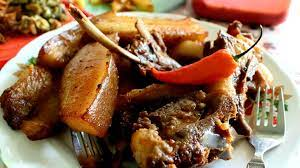
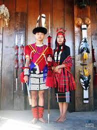

The countless tribes of Nagaland give its cuisine unique flavours, colours, styles and a distinct dash of adventure. The Naga cuisine is primarily non-vegetarian and goes beyond the typical non-vegetarian ingredients with dogs, spiders, pork, beef, crabs, cats, chicken and even elephants in its platter.
Smoke Pork
The food here is generously hot and spicy, given the usage of Naga King Chili in most of its dishes. The everyday food of Naga people is rice with meat or vegetables. Smoke-dried pork curry with Akhuni (fermented soya beans), Rice beer and snails are the traditional aspects of Nagaland's cuisine. Koat pitha is a favourite sweet dish to be relished, made with bananas, rice flour, and jaggery
Dried pork, smoked pork stew, boiled vegetables, bamboo steamed fish, roasted intestines, beans mix, bitter melon, chicken rice soup, chilly crab sauce, naga ghost chilli sauce are the unique treasures of the area's cuisine. Also, it is safe to say that the options for vegetarian food here are minimal and will not offer the same variety as in case of local non-vegetarian food.
The traditional dress of Nagaland is Li. This style of dressing has numerous patterns and designs, especially embroidered. They wear a phanek below the waist, which is similar to a low skirt. Mechala is the common upper wear. It is a wraparound shirt.The shawls of the dress have more work done to it. The shawls of grand work are worn by people of higher class. Usually, the designs are geometric shapes and floral patterns.